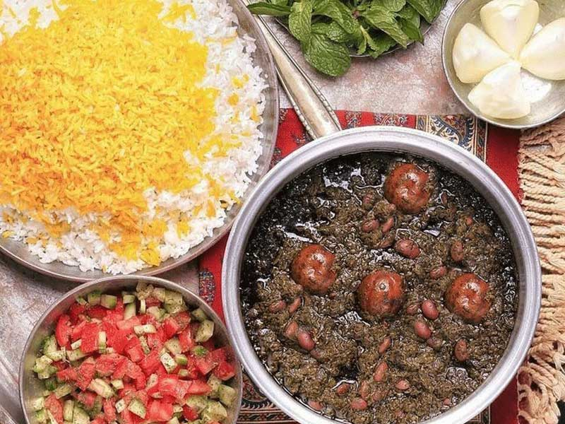

Home
Ghormeh Sabzi

Description
Ghormeh Sabzi is a traditional Persian herb stew made with a flavorful mix of fresh herbs, tender chunks of meat,
kidney beans, and dried limes. This iconic Iranian dish is slow-cooked to perfection, resulting in a tangy,
aromatic, and deeply satisfying meal. It's typically served with steamed basmati rice, making it a staple of
Persian cuisine and a favorite at family gatherings and celebrations.
Ingredients
For the Stew:
- Beef or lamb, cut into small chunks (1 pound / 450g)
- Kidney beans, soaked overnight (1 cup / 200g)
- Fresh parsley, finely chopped (1 cup / 50g)
- Fresh cilantro, finely chopped (1/2 cup / 25g)
- Fresh fenugreek leaves or dried fenugreek (2 tablespoons)
- Spinach, finely chopped (optional, 1/2 cup / 25g)
- Onion, finely chopped (1 medium)
- Garlic, minced (3 cloves)
- Dried limes (3-4, pierced with a fork)
- Turmeric powder (1 teaspoon)
- Salt (to taste)
- Black pepper (to taste)
- Vegetable oil (3 tablespoons)
- Water (4-5 cups / 1-1.2 liters)
For Serving:
- Steamed basmati rice
- Saffron (optional, for garnish)
Steps
- Heat 2 tablespoons of vegetable oil in a large pot over medium heat. Add the chopped onion and garlic, and
sauté until golden and fragrant.
- Add the chunks of meat to the pot. Sprinkle with turmeric, salt, and black pepper. Sear the meat until
browned on all sides.
- In a separate pan, heat 1 tablespoon of oil and sauté the parsley, cilantro, fenugreek, and spinach (if
using) until aromatic, about 5 minutes. Add this herb mixture to the pot with the meat.
- Add the soaked kidney beans and pierced dried limes to the pot. Pour in the water, ensuring everything is
submerged.
- Bring the stew to a boil, then reduce the heat to low and cover the pot. Simmer for 2-3 hours, stirring
occasionally, until the meat is tender and the flavors are well blended.
- Adjust seasoning with additional salt and pepper if needed. Remove the dried limes before serving, or leave
them in for a more intense flavor.
- Serve the Ghormeh Sabzi hot, alongside steamed basmati rice. Garnish with a pinch of saffron if desired.
Content on this page was created with the help of ChatGPT.